Grundsätzlich unterscheidet sich die Anlage von Vorlagen des Typs "Produktionsauftrag" nicht von der Anlage anderer Typen. Aus diesem Grund werden in diesem Kapitel nur die Spezial- bzw. Sonderfunktionen beschrieben.
Tabelle "Datenfelder der Vorlage"
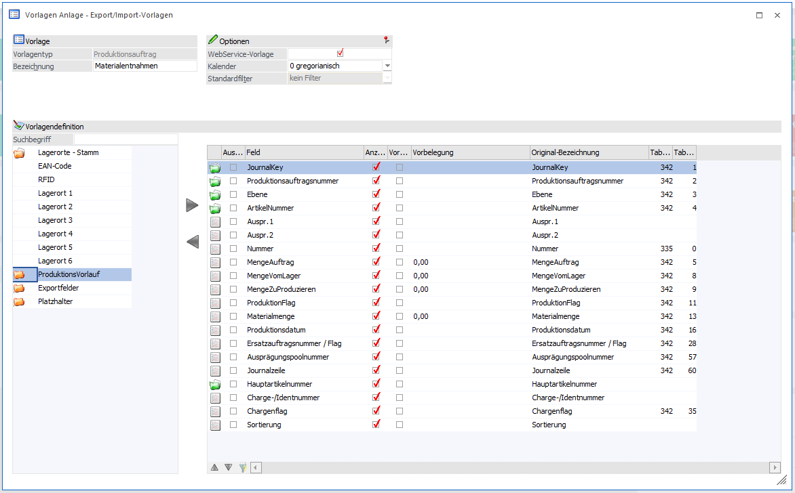
Ø Felder aus dem Bereich "Lagerort - Stamm"
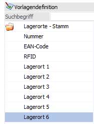
Für die Angabe eines Lagerorts stehen die Felder "Nummer" (Lagerort-ID), "EAN-Code", "RFID" und die sechs Ebenen (Lagerort 1 bis 6) zur Verfügung. Die Lagerorte werden hierbei in der folgenden Reihenfolge gesucht bzw. ermittelt:
ü Nummer
Existiert das Feld
"Nummer" und beinhaltet einen numerischen Wert, so wird nach der Lagerort-ID
gesucht. Ist der Inhalt wiederum alphanumerisch, so geht die WinLine davon aus,
dass es sich um einen Lagerortnamen handelt und sucht nach genau diesem Lagerort
(wenn dieser mehrfach vorkommt gibt es eine Warnung/Hinweis). Das Verhalten ist
hierdurch identisch zu jenem der Lagerbuchhaltung (Ausnahme: beim Export wird
die Lagerort-ID / Name vorbelegt). Sobald das Feld "Nummer" im Aufbau der
Vorlage existiert und mit einem Inhalt versehen ist werden die weiteren
möglichen Lagerortfelder nicht berücksichtigt.
ü EAN-Code
Sollte das Feld
"Nummer" nicht vorhanden oder befüllt sein (d.h. leer/0) sein, so wird das Feld
"EAN-Code" bei Vorhandensein geprüft. Die weiteren Felder werden dann wiederum
außer Acht gelassen.
ü RFID
Als nächstes würde der
Inhalt der Felds "RFID" kontrolliert werden.
ü Lagerort 1 bis 6
Zum Schluss
wird nach allen Lagerotnamen gesucht.
Hinweis
Voraussetzung beim Verwenden des Lagermanagements ist das Feld "Produktionsflag". Das Feld für Lagermanagementzeilen muss auf den Wert "L" gesetzt werden, sofern mehrere Aufteilungen zu einer Artikelzeile durchgeführt werden sollen. Zusätzlich muss gewährleistet sein, dass beim Importieren zuerst die Zeilen des Lagermanagements kommen und im Anschluss die Prod.Auftragszeile. Dies wird über das Feld "Sortierung" gesteuert.
Ø Felder aus dem Bereich "Produktionslauf"
In dem Bereich gibt es mehrere Felder für die Mengen. Beim Importieren einer Materialentnahme werden die Felder für die Menge in der Reihenfolge geprüft:
ü MengeVomLager (T342.C008)
ü MengeZuProduzieren (T342.C009)
ü Materialmenge (T342.C013)
Dabei müssen nicht alle Felder belegt sein, es reicht aus, dass ein Feld mit den Mengen befüllt ist. D.h. die entnommene Menge muss nicht mehr in der Spalte Materialmenge (T342.C013) stehen.
Ø Ersatzauftragsnummer / Flag
Über das Feld kann die Hinterlegung aus den PPS-Parametern bzgl. der Abbuchungen beim Druck des Materialentnahmescheins übersteuert werden.
Hinweis
In den Applikationsparametern kann eingestellt werden, ob die Materialentnahme beim Druck des Materialentnahmescheins erfolgen soll oder erst bei der Endmeldung. Diese Einstellung kann über das ExIm der übersteuert werden. Dazu muss in den Vorlagen das Feld "Ersatzauftragsnummer / Flag" enthalten sein. Bei der Vorlage steht der Matchcode zur Verfügung bzw. die folgenden Optionen stehen zur Verfügung:
ü 2 - Produktionsendmeldung nur mit IST-Werten
ü 3 - Endmeldung nur mit entnommenen Mengen
Ist das Feld in der Vorlage nicht enthalten gelten die Einstellungen aus den Applikationsparametern; ist es enthalten muss ein Wert hinterlegt sein.
Ø Sortierung
Das Feld wird beim Importieren von Artikeln mit Lagerorten benötigt, sofern die Aufteilung auf mehrere Lagerorte vorgenommen wird. Dabei muss die Hauptzeile des Artikels den höchsten Wert haben.
Ø ProduktionFlag
Das Feld kann die Werte 0, X oder L beinhalten.
ü 0
Es handelt sich um Zeilen vom
Hauptartikel.
ü L
Dieses Kennzeichen wird
benötigt, sofern mehrere Lagerorte in der Importdatei für ein Artikel angegeben
werden sollen.
ü X
Es handelt sich um
Aufteilungszeilen bzw. die direkten Buchungszeilen.
Hinweis
Das Feld für Lagermanagementzeilen muss auf den Wert "L" gesetzt werden, sofern mehrere Aufteilungen zu einer Artikelzeile durchgeführt werden sollen. Zusätzlich muss gewährleistet sein, dass beim Importieren zuerst die Zeilen des Lagermanagements kommen und im Anschluss die Prod.Auftragszeile.
Ø Journalzeile
Wird benötigt, wenn in dem Produktionsauftrag Hauptartikel mit Ausprägungen enthalten sind. Innerhalb des Produktionsauftrags noch nicht ausgeprägt wurde. Dann muss exakt die Journalzeile des Hauptartikels aus dem PPS-Auftrag für die Ausprägungen verwendet werden.
Beispiel 1
Materialentnahme eines Hauptartikels ohne Ausprägungen mit Lagermanagement (Aufteilung auf einen Lagerort)
In dem Produktionsauftrag "Lager5013" gibt es den Artikel "100 - Stahl", welcher Lagerorte verwendet.
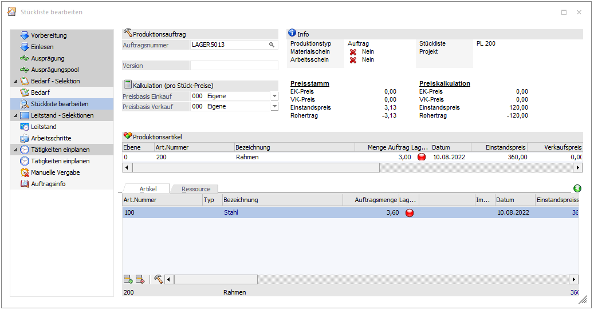
In der Importdatei wird die Lagerort ID angegeben, sowie ein Eintrag bei der ErsatzauftragsnummerFlag. Das Produktionsflag beinhaltet den Wert "X" oder es kann die Zeile den Wert "L" haben.
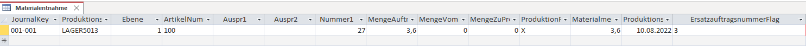
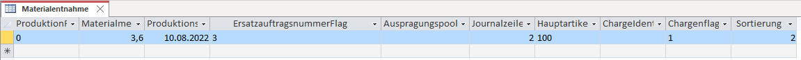
Anschließend erfolgt der Import mit Hilfe der Aktion "6 - Materialentnahmeschein drucken".
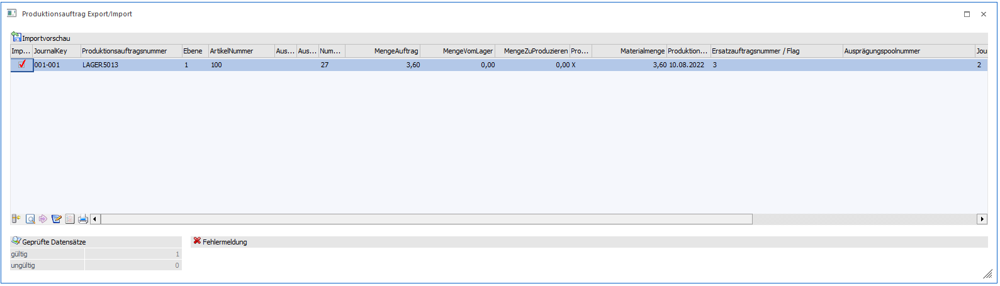
Das Material wird hierdurch abgebucht.
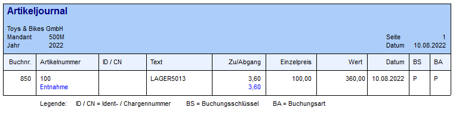
Beispiel 2
Materialentnahme eines Hauptartikel ohne Ausprägungen mit Lagermanagement (Aufteilung auf mehre Lagerorte)
Für den Produktionsauftrag "P50015" soll der Artikel von zwei Lagerorten entnommen werden. Hierfür muss es in der Importdatei 3 Zeilen geben. Dabei gibt es eine Zeile mit dem Produktionsflag "0" wo die Gesamtsumme der Entnahmemenge steht und die beiden Lagerortzeilen mit dem Wert "L".
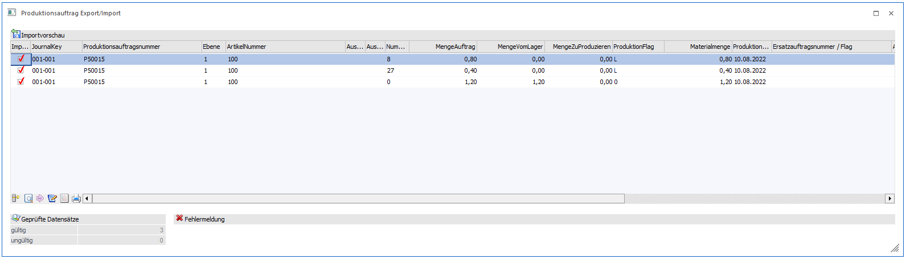
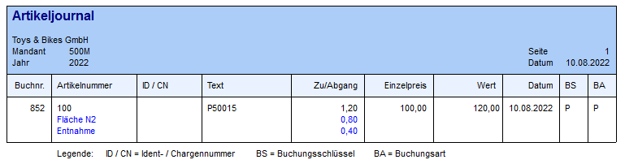
Beispiel 3
Materialentnahme eine Artikel mit Ausprägung, Charge und Lagermanagement
Es gibt den Produktionsauftrag "Lager5016". Dort wird der Artikel "K800" mit der Menge 5 Stück benötigt.
In der Importdatei muss keine Zeile für den Hauptartikel "K800" enthalten sein. In dem Fall wo die gleiche Charge von verschiedenen Lagerorten entnommen werden soll muss es eine Zeile mit dem Produktionsflag "X" geben und bei der Sortierung muss diese Zeile gegenüber den Lagerort Zeilen einen höheren Wert haben.
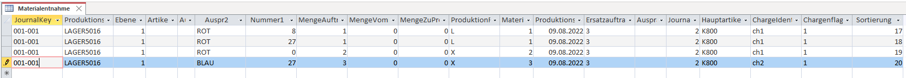
Beim Import wird die Option gesetzt, dass die Ausprägung angelegt werden soll, wenn sie nicht vorhanden ist. Es kann sonst bei dem Feld "Artikelnummer" direkt die vorhandene Ausprägung verwendet werden oder wie in diesem Beispiel wird die vorhandene Ausprägung herangezogen.
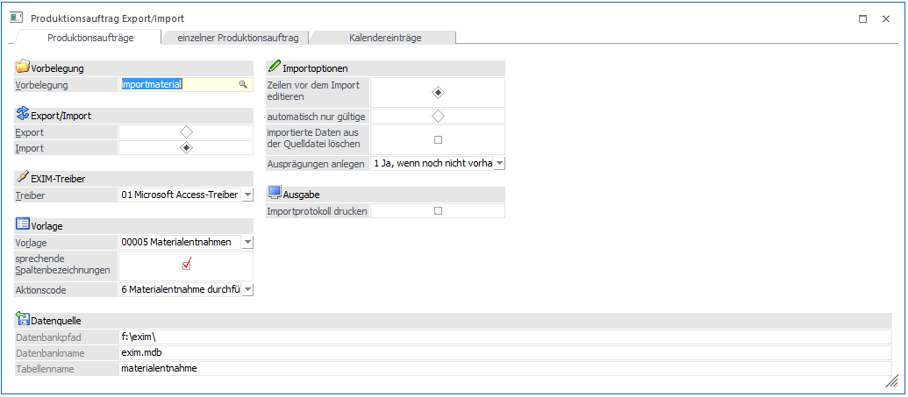
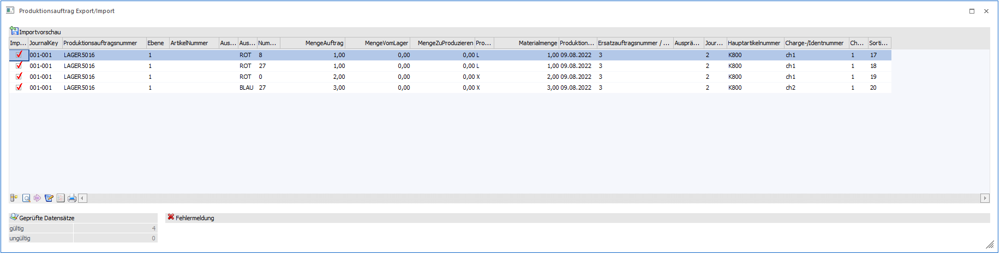
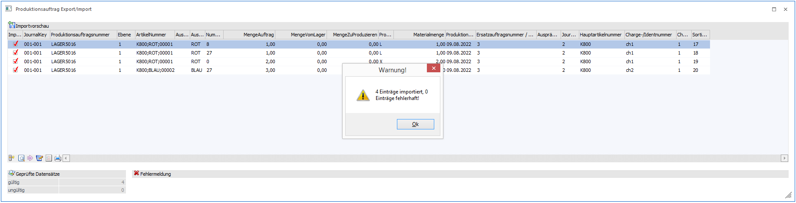
Beispiel 4
Endmeldung eines Produktionsartikels, welcher Ausprägungen, Seriennummern und Lagermanagement verwendet
In dem Produktionsauftrag "Lager5006" wird der Artikel "800" über 1 Stück endgemeldet. Beim Import wird die Option gesetzt, dass die Ausprägungen angelegt werden sollen, wenn sie nicht vorhanden sind.
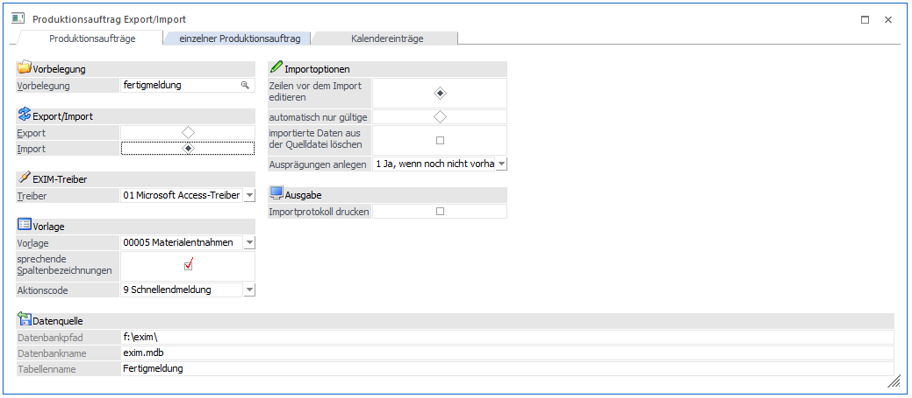
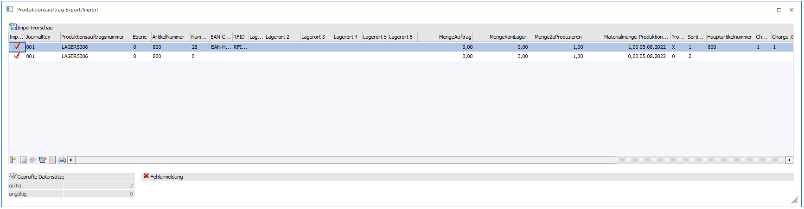
In der Importdatei muss es bei der Endmeldung die Hauptartikelzeile geben, damit bei einer Teilendmeldung die Restmengen korrekt berechnet werden können. Die Journalzeile muss korrekt sein. Diese kann man sich sonst am einfachsten über einen Export des Produktionsauftrag ermitteln.
Hinweis
Beim Löschen von Produktionsaufträgen muss nicht der Arbeitsschritt in der Vorlage enthalten sein. Für das Löschen kann der Ebenenkey (C001) und/oder die Zeilennummer (C060) verwendet werden. Der Ebenenkey ist ein Pflichtfeld, wenn in der Importdatei für die Spalte kein Wert (leer) enthalten ist, dann wird die Zeilennummer herangezogen und müsste befüllt sein oder der Arbeitsschritt.